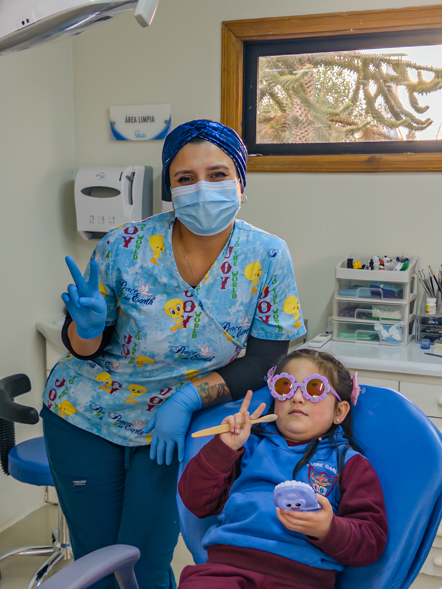
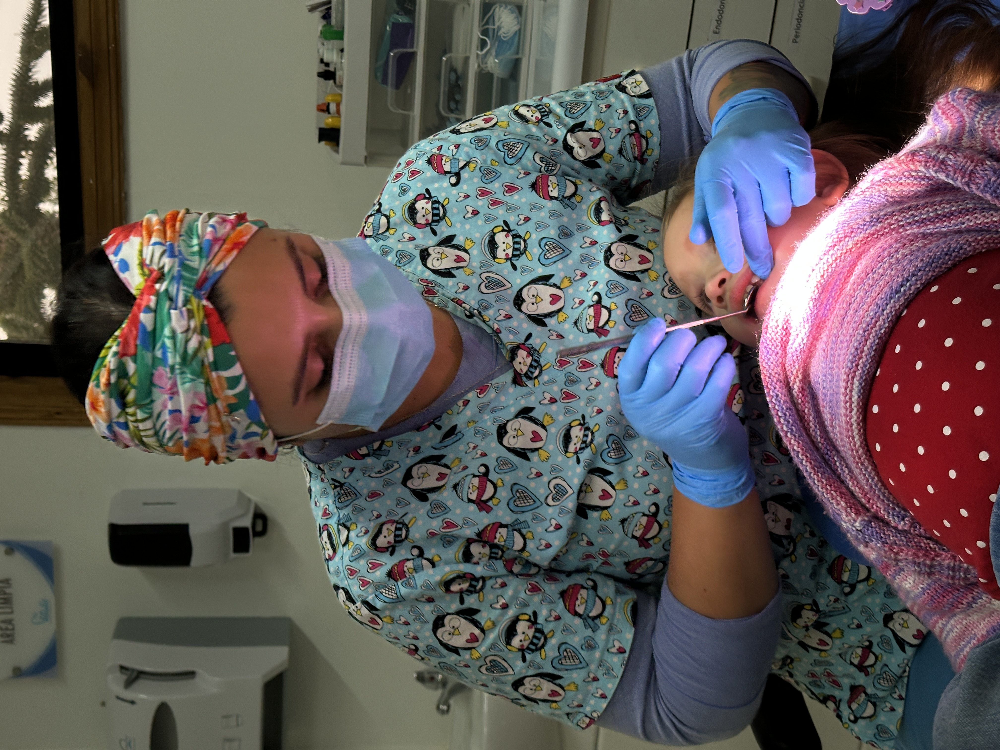
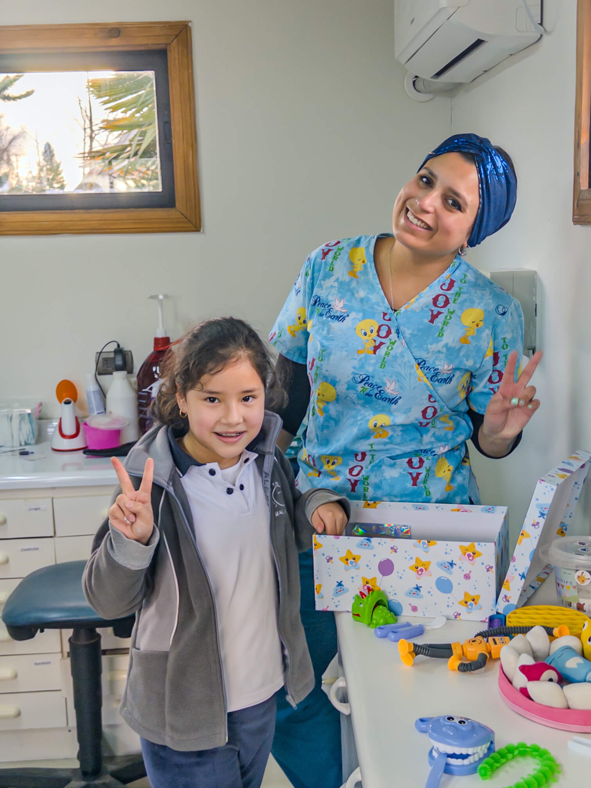
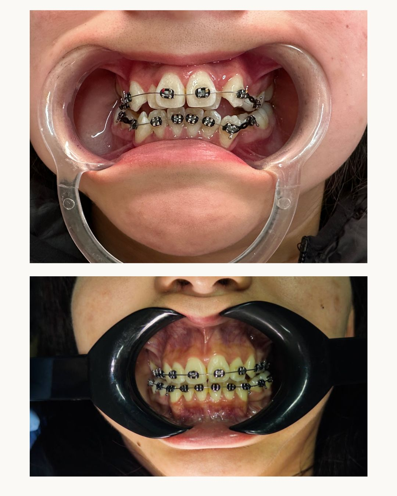
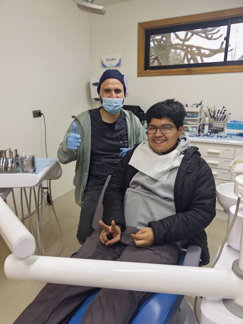
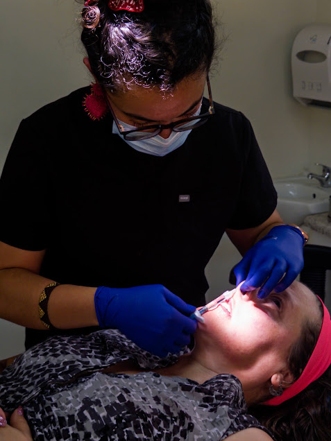
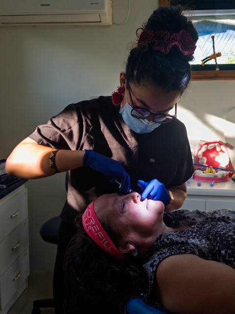
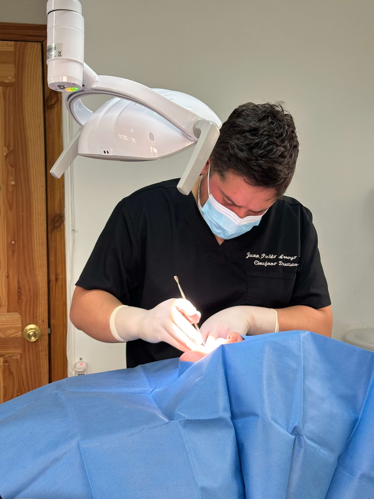
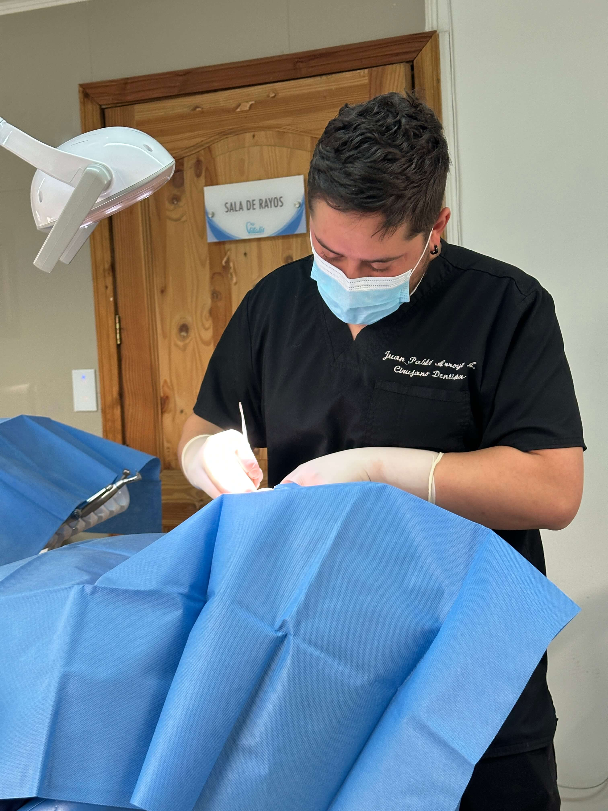
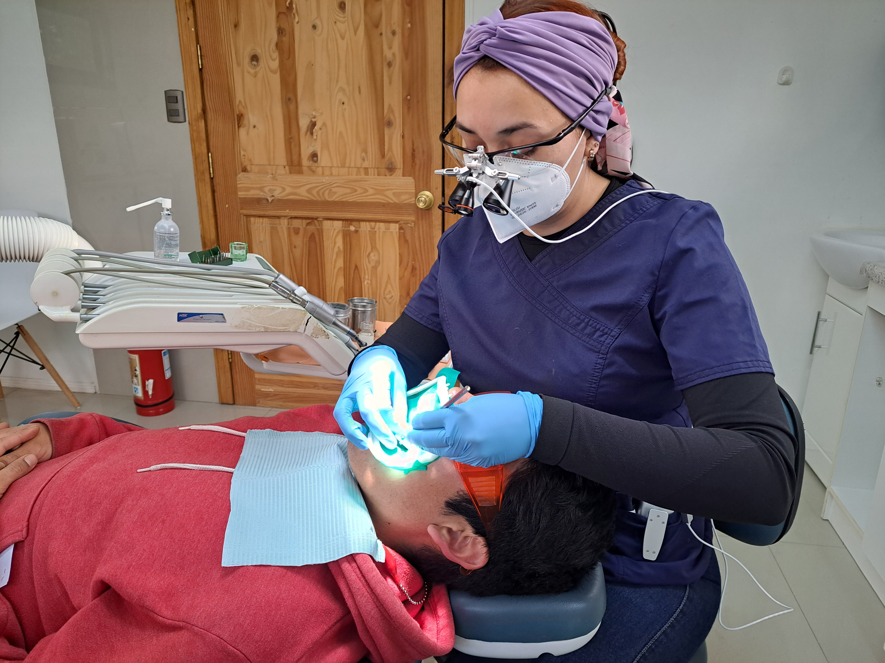

👶 Odontopediatría
La odontopediatría es la especialidad dental enfocada en la salud bucal de niños y niñas desde el primer diente de leche hasta la adolescencia. Su objetivo principal es prevenir enfermedades dentales mediante educación, diagnóstico temprano y tratamientos adaptados a pacientes pediátricos.
En Vitalis Clínica Odontológica creamos una experiencia positiva y libre de miedo para los más pequeños. Nuestra especialista, la Dra. Catalina Rivera, cuenta con formación específica en manejo de pacientes infantiles y utilizamos técnicas de sedación consciente cuando es necesario. Atendemos niños desde 1 año, con énfasis en prevención, sellantes de fosas y fisuras, fluorización y detección temprana de maloclusiones que podrían requerir ortodoncia en el futuro. El 80% de los niños que nos visitan por primera vez vuelven voluntariamente en su control semestral.
Trae a tus hijos a conocer su "dentista amiga" y construyamos juntos una rutina de cuidado dental que los acompañará toda la vida.
- Manejo experto de pacientes NANEAS (Niños y Adolescentes con Necesidades Especiales de Atención en Salud).
- Diplomado en traumatismo dentoalveolar.
- Área de juegos exclusiva.


😁 Ortodoncia
La ortodoncia es la especialidad que corrige la posición de los dientes y los huesos maxilares para mejorar la mordida, la función masticatoria y la estética de la sonrisa. Los tratamientos ortodóncicos no solo transforman la apariencia, sino que previenen desgaste dental anormal, problemas de articulación temporomandibular y dificultades para mantener una higiene bucal adecuada.
En Vitalis ofrecemos ortodoncia convencional con brackets metálicos, brackets estéticos de zafiro, y ortodoncia interceptiva para niños. Nuestro especialista, el Dr. Carlos Salamanca, evalúa cada caso mediante radiografías digitales y planifica el tratamiento en 3D. Los tratamientos duran entre 12 y 24 meses en promedio, con controles mensuales en nuestra clínica de Malalhue. Trabajamos con planes de financiamiento para que el precio no sea un obstáculo.
¿Sueñas con una sonrisa alineada? Agenda tu evaluación ortodóncica y descubre todas las opciones disponibles para ti.
- Ortodoncia tradicional correctiva.
- Ortodoncia interceptiva (niños).
- Diagnóstico digital avanzado.


🔩 Implantología
La implantología dental es la especialidad que reemplaza dientes perdidos mediante la instalación quirúrgica de implantes de titanio en el hueso maxilar. A diferencia de los puentes tradicionales, los implantes no requieren desgastar dientes sanos vecinos y ofrecen una solución permanente que dura más de 25 años con cuidado adecuado.
En Vitalis Clínica Odontológica realizamos todo el proceso en nuestra clínica de Malalhue: desde la evaluación inicial con escaneo 3D hasta la colocación de la corona definitiva. Más del 95% de nuestros implantes tienen éxito a largo plazo, y nuestros pacientes pueden retomar su vida normal en 48 horas. Ofrecemos implantes unitarios, múltiples y rehabilitaciones completas con precios desde $350.000 por implante.
¿Has perdido uno o más dientes? Agenda tu evaluación gratuita hoy y descubre cómo recuperar tu sonrisa sin salir de Malalhue.
- Implantes unitarios.
- Puentes sobre implantes.
- Sobredentaduras y prótesis fija.


✨ Estética Facial & Oral
La estética facial y oral es la rama de la odontología que mejora la armonía de la sonrisa y el rostro mediante procedimientos como carillas de porcelana, blanqueamiento dental, bótox y ácido hialurónico. A diferencia de la odontología tradicional, su foco no es solo la salud funcional sino el equilibrio estético del tercio inferior de la cara.
En Vitalis combinamos odontología y estética facial para ofrecer resultados integrales. Realizamos blanqueamientos dentales profesionales con tecnología láser (resultados visibles en una sola sesión), carillas de porcelana ultradelgadas que no requieren desgastar el diente, y tratamientos de armonización facial con ácido hialurónico para labios, surcos nasogenianos y sonrisa gingival. Todos nuestros procedimientos son realizados por profesionales capacitados y certificados.
Una sonrisa armoniosa cambia cómo te percibes y cómo te perciben los demás. Agenda tu consulta de estética dental y descubre tu mejor versión.
- Toxina Botulínica y Rinomodelación.
- Estimulación con colágeno.
- Carillas de resina y alta estética.


🦷 Cirugía Bucal
La cirugía bucal es la especialidad que diagnostica y trata quirúrgicamente patologías de la cavidad oral, incluyendo extracciones complejas, terceros molares retenidos (muelas del juicio), quistes maxilares y cirugía preprotésica. Estos procedimientos requieren formación quirúrgica avanzada más allá de la odontología general.
En Vitalis Clínica Odontológica realizamos cirugías ambulatorias con anestesia local y sedación consciente para máxima comodidad del paciente. Nuestro equipo utiliza radiografía digital y tomografía para planificar cada procedimiento con precisión milimétrica. Las cirugías de muelas del juicio se realizan en aproximadamente 45 minutos, y la recuperación inicial toma entre 3 y 5 días con medicación analgésica y cuidados postoperatorios que te explicamos detalladamente.
¿Tienes molestias con tus muelas del juicio? No esperes a que el dolor empeore. Agenda tu evaluación quirúrgica hoy.
- Extracción de terceros molares (Juicio).
- Frenectomía y alargamiento coronario.
- Recubrimiento de recesiones.


⚡ Endodoncia
La endodoncia, conocida popularmente como "tratamiento de conducto", es la especialidad que trata las enfermedades de la pulpa dental (el nervio del diente) cuando esta se infecta o inflama debido a caries profundas, traumatismos o fracturas. El objetivo es salvar el diente natural evitando su extracción.
En Vitalis, la Dra. Natalia Mosoco realiza tratamientos de endodoncia con microscopio operatorio que permite visualizar y limpiar conductos que a simple vista son imperceptibles. Un tratamiento de conducto bien realizado tiene una tasa de éxito superior al 90% y puede realizarse en 1 a 3 sesiones dependiendo de la complejidad. Una vez finalizado, el diente tratado dura tantos años como un diente sano si se mantiene una higiene adecuada y controles regulares.
¿Te han dicho que tu diente no tiene salvación? Siempre vale la pena una segunda opinión endodóncica. Agenda tu evaluación y salvemos tu diente.
- Tratamiento de conducto (todos los dientes).
- Tecnología de Endodoncia Mecanizada.
- Alivio del dolor dental.